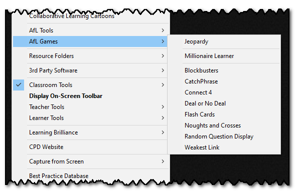

AfL Games
Games are a fun way of learning, but must always be tied in carefully to the content of the lesson.
The Teacher Toolkit has a range of games built in, ready for you to use:

They use three different types of questions:
1) Jeopardy - uses levelled questions
2) Millionaire - uses multiple-choice questions
3) All others use a general question and answer format - and the same question bank can be used for any of these.